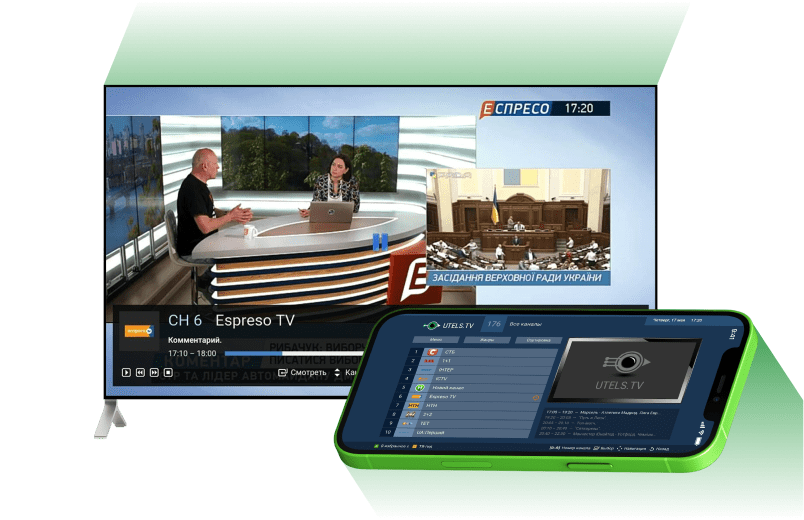

<!--DEV
@ @include('blocks/utels-tv-banner/utels-tv-banner.html')
-->

<article class="container utels-tv-banner">
  <div class="utels-tv-banner__inner">

    <div class="utels-tv-banner__text">
      <h2 class="utels-tv-banner__title">UTELS.TV</h2>
      <div class="utels-tv-banner__descr">
        <p >Сучасне інтерактивне телебачення в HD якості!</p>
        <p >Переглядайте записані телепрограми у зручний час</p>
      </div>
      <ul class="list-nostyled  utels-tv-banner__features-list">
        <li class="utels-tv-banner__features-item">
          <svg width="14" height="21"><use xmlns:xlink="http://www.w3.org/1999/xlink" xlink:href="img/sprite-svg.svg#mobile-device"></use></svg>
          <span>Різні пристрої</span>
        </li>
        <li class="utels-tv-banner__features-item">
          <svg width="14" height="20"><use xmlns:xlink="http://www.w3.org/1999/xlink" xlink:href="img/sprite-svg.svg#bookmark"></use></svg>
          <span>Вибране</span>
        </li>
        <li class="utels-tv-banner__features-item">
          <svg width="20" height="20"><use xmlns:xlink="http://www.w3.org/1999/xlink" xlink:href="img/sprite-svg.svg#baby"></use></svg>
          <span>Батьківський контроль</span>
        </li>
        <li class="utels-tv-banner__features-item">
          <svg width="15" height="18"><use xmlns:xlink="http://www.w3.org/1999/xlink" xlink:href="img/sprite-svg.svg#rewind"></use></svg>
          <span>Перемотка</span>
        </li>
        <li class="utels-tv-banner__features-item">
          <svg width="21" height="15"><use xmlns:xlink="http://www.w3.org/1999/xlink" xlink:href="img/sprite-svg.svg#archive"></use></svg>
          <span>Архів телепередач</span>
        </li>
        <li class="utels-tv-banner__features-item">
          <svg width="16" height="18"><use xmlns:xlink="http://www.w3.org/1999/xlink" xlink:href="img/sprite-svg.svg#pause"></use></svg>
          <span>Пауза эфіру</span>
        </li>
        <li class="utels-tv-banner__features-item">
          <svg width="21" height="19"><use xmlns:xlink="http://www.w3.org/1999/xlink" xlink:href="img/sprite-svg.svg#tv"></use></svg>
          <span>Програма телеканалу</span>
        </li>
      </ul>
    </div>

    <div class="utels-tv-banner__link-wrapper">
      <a href="#" class="btn btn--icon  btn--black  utels-tv-banner__link">
        <span>Детальніше</span>
        <svg width="20" height="20"><use xmlns:xlink="http://www.w3.org/1999/xlink" xlink:href="img/sprite-svg.svg#carret-down-round"></use></svg>
      </a>
      <span class="utels-tv-banner__decor">
        
      </span>
    </div>

    <div class="utels-tv-banner__img-wrapper">
      <div class="utels-tv-banner__img">
        <picture>
          <!-- 804x520 / от 1200 -->
          <!-- 600x388 / от 480-1200 -->
          <source data-srcset="img/banner-img.webp" type="image/webp">
          
        </picture>
      </div>
    </div>

  </div>
</article>
